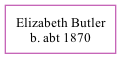

Elizabeth Butler c1870 -
[ Home ] | [ Calendar ] | [ Surnames Index ] | [ Family History ]Elizabeth Butler was born in Wales c. 18701. In 1871, she lived in Llantwit Juxta Neath, Glamorgan, Wales1.
Citations
- 1871 Wales Census Online publication - Provo, UT, USA: The Generations Network, Inc., 2004.Original data - Census Returns of England and Wales, 1871. Kew, Surrey, England: The National Archives of the UK (TNA): Public Record Office (PRO), 1871. Data imaged from the National
Family Tree
Generated by ged2site. Last updated on Sep 18, 2024